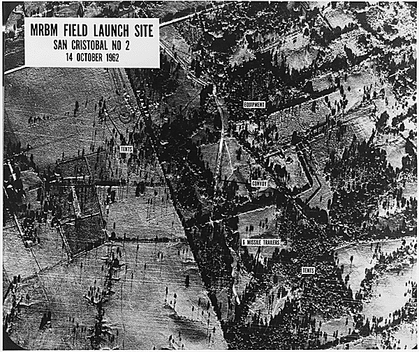
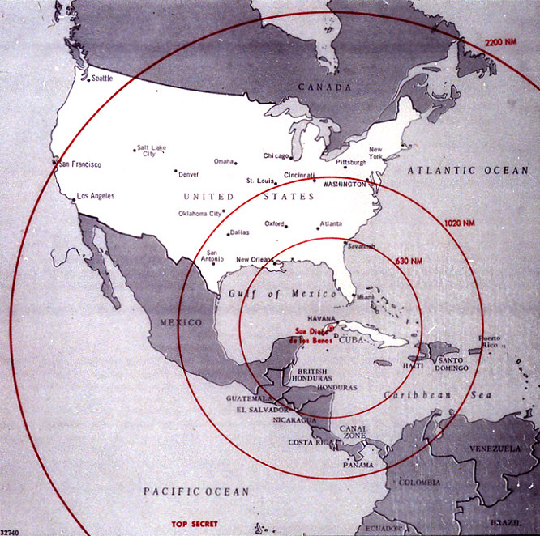
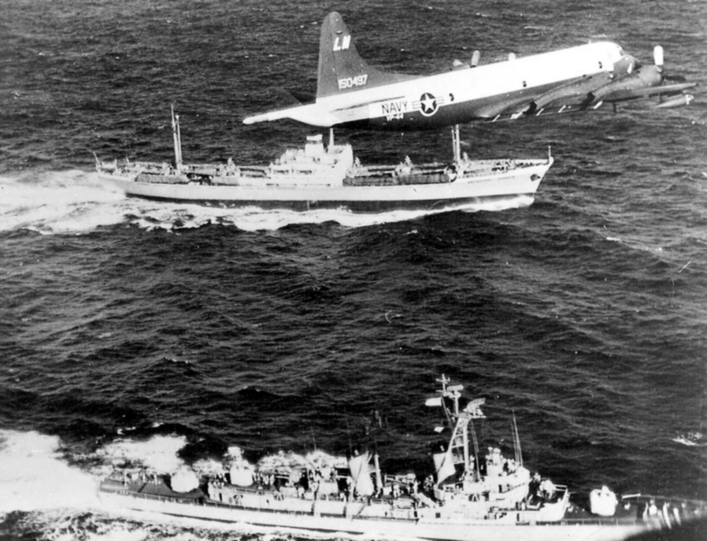
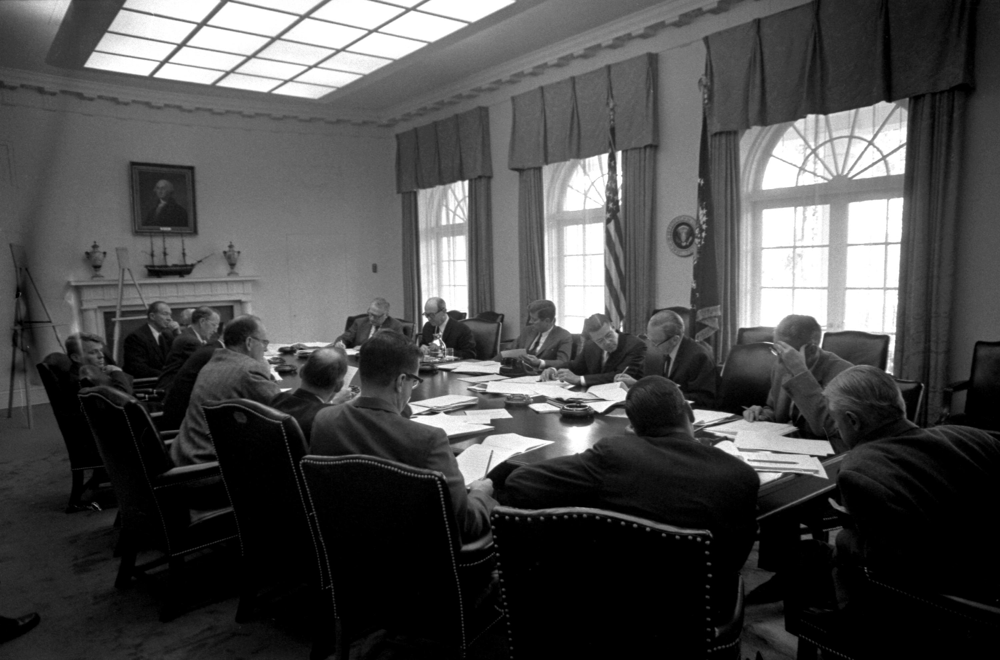
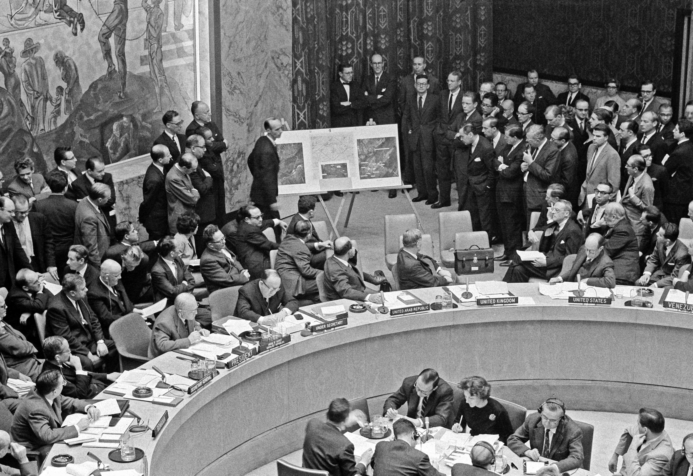

Pada 14 Oktober 1962, sebuah pesawat pengintai U-2 Amerika terbang di atas Kuba dan mengambil 928 foto. Di salah satunya terlihat sesuatu yang seharusnya tidak ada di sana: situs rudal balistik Soviet yang sedang dibangun — berhulu ledak nuklir, berjarak tembak hingga Washington D.C. Tiga belas hari kemudian, pada 28 Oktober 1962, krisis itu berakhir. Dunia selamat dari perang nuklir — lewat sebuah kesepakatan yang separuhnya disembunyikan dari publik selama lebih dari 25 tahun.

Kenapa Rudal Soviet Ada di Kuba?
Setahun sebelumnya, April 1961, CIA melatih ±1.400 eksil Kuba untuk menginvasi dan menggulingkan Fidel Castro — Invasi Teluk Babi. Operasinya gagal total dalam 3 hari. Bagi Castro dan pemimpin Soviet Nikita Khrushchev, pelajarannya jelas: Amerika akan mencoba lagi.
Khrushchev punya dua alasan menaruh rudal di Kuba: melindungi Kuba dari invasi AS berikutnya, dan menyeimbangkan rudal Jupiter Amerika yang ditempatkan di Turki dan Italia — mengarah langsung ke Uni Soviet. Pengiriman dilakukan diam-diam lewat Operasi Anadyr (Juni–Oktober 1962), dengan kamuflase besar-besaran: rudal-rudal R-12 (SS-4) berjangkauan ±2.000 km dikirim terpisah dari hulu ledaknya, dibangun di tengah kebun tebu Kuba barat.

14–16 Oktober: Foto yang Mengubah Segalanya
Pilot U-2 Mayor Richard Heyser tidak tahu apa yang ia potret pagi itu. Analisis foto di Washington menemukan tiga situs rudal jarak menengah dekat San Cristóbal — lengkap dengan transporter dan launcher di posisi tembak. Misi lanjutan 15 Oktober menemukan situs keempat, plus dua situs rudal jarak lebih jauh di Guanajay.
Ada detail yang jarang diceritakan: Deputi Direktur CIA melapor ke penasihat presiden McGeorge Bundy pada malam 15 Oktober — dan Bundy sengaja menunda memberi tahu Kennedy sampai pagi. Alasannya, dalam memo setahun kemudian: berita sebesar ini harus bisa didemonstrasikan dengan valid sebelum presiden bertindak. 16 Oktober pagi, Kennedy akhirnya diberi tahu — dan langsung membentuk ExComm, komite krisis dewan keamanan nasionalnya.
22 Oktober: Satu Kata yang Menahan Perang
Selama enam hari ExComm menimbang opsi: serangan udara dadakan, invasi penuh, atau blokade laut. Kennedy menolak dua opsi pertama — terlalu berisiko memicu perang. Ia memilih blokade laut. Tapi perhatikan katanya: bukan "blockade", melainkan "quarantine" (karantina).
Ini bukan soal gaya bahasa. Blokade = tindakan perang menurut hukum internasional. "Karantina" adalah istilah yang disengaja: menunjukkan tekad tanpa memancing respons militer Soviet, sekaligus memberi ruang de-eskalasi. Pada malam 22 Oktober, Kennedy tampil di TV nasional: mengumumkan penemuan situs rudal, memerintahkan karantina laut (dengan dukungan negara-negara Amerika), dan memperingatkan bahwa rudal nuklir apa pun yang diluncurkan dari Kuba = serangan Uni Soviet ke AS — yang akan dibalas penuh.

27 Oktober: Black Saturday
24 Oktober, karantina berlaku efektif. Kapal-kapal Soviet mendekati garis — lalu berbalik. Dunia sempat bernapas. Tapi 27 Oktober menjadi hari tergelap krisis, yang dikenang sebagai "Black Saturday":
Sebuah U-2 ditembak jatuh di atas Kuba oleh rudal darat-ke-udara Soviet. Pilotnya, Mayor Rudolf Anderson, tewas — satu-satunya korban tempur selama krisis. Para jenderal mendesak Kennedy membalas. Ia menolak — dan menulis surat belasungkawa ke janda Anderson.
Di hari yang sama, surat kedua Khrushchev tiba di Washington. Sehari sebelumnya (26 Okt) Khrushchev sudah mengirim surat emosional yang privat: Soviet akan menarik rudal jika AS berjanji tidak menginvasi Kuba. Kini surat kedua — yang publik — menambah syarat: AS juga harus menarik rudal Jupiter-nya dari Turki.
Dan di bawah permukaan laut Karibia, pada hari yang sama, sebuah kapal selam Soviet B-59 yang dikepung kapal perusak AS hampir meluncurkan torpedo nuklirnya. Kaptennya mengira perang sudah mulai. Peluncuran butuh persetujuan tiga perwira — dan satu orang, Vasili Arkhipov, menolak. Kisah lengkapnya? Itu feed berikutnya. Stay tuned.

Dunia 25 tahun percaya Soviet mundur karena ketegasan Amerika. Faktanya, Amerika juga menarik rudalnya — diam-diam, dari Turki.
Resolusi: Janji Publik, Deal Rahasia
ExComm memakai taktik yang belakangan disebut "Trollope ploy": mengabaikan surat Sabtu dan menjawab surat Jumat secara publik — AS berjanji tidak akan menginvasi Kuba. Sementara itu, pada malam 27 Oktober, Jaksa Agung Robert Kennedy bertemu diam-diam dengan Dubes Soviet Anatoly Dobrynin: Soviet menarik rudalnya dari Kuba di bawah pengawasan PBB, dan sebagai tambahannya — rahasia — AS akan menarik rudal Jupiter dari Turki, dengan syarat tidak pernah diumumkan.
28 Oktober, Radio Moskow menyiarkan pesan Khrushchev: Soviet setuju membongkar rudal-rudalnya. Kennedy menjawab secara publik. Tiga belas hari berakhir.
Catatan redaksi: narasi publik selama puluhan tahun adalah "Soviet mundur karena blokade dan ketegasan Kennedy." Itu separuh cerita. Separuhnya lagi — penarikan Jupiter dari Turki — hanya diketahui 9 pejabat AS saat itu, dan baru diakui resmi setelah Dobrynin mengungkap detail pertemuan 27 Oktober 1962 pada 1989. Versi "kemenangan telak AS" adalah konstruksi yang disengaja.

Analisis: Dibaca Pakai Lensa Ketahanan Nasional
1. Beri lawan jalan keluar yang menjaga mukanya. Kennedy tidak mempermalukan Khrushchev di depan umum — ia menjawab surat yang "lunak", menyelesaikan tuntutan Turki diam-diam. Khrushchev bisa pulang membawa "kemenangan": Kuba aman dari invasi. Negosiasi krisis bukan cuma soal materi, tapi soal muka. Lawan yang terpojok tanpa jalan keluar adalah lawan yang paling berbahaya.
2. Bukti dulu, klaim kemudian. Seluruh respons AS berdiri di atas 928 foto U-2 — ditunjukkan ke publik lewat pidato 22 Oktober, dibawa ke DK PBB. Tanpa bukti terverifikasi, tuduhan soal senjata pemusnah massal tinggal tuduhan. Ini standar yang sama kami pegang di setiap konten Jejak Kuasa.
3. Salah paham bisa membunuh — bangun jalur komunikasi. Kru B-59 mengira depth charge "isyarat" AS adalah serangan; mereka tak bisa menghubungi Moskow berhari-hari. Sehabis krisis, Washington–Moskow membangun jalur komunikasi langsung ("hotline"). Untuk Indonesia: di kawasan sengketa seperti Laut China Selatan, kanal komunikasi militer-ke-militer adalah infrastruktur pertahanan — bukan basa-basi diplomatik.
4. Jangan jadi papan bidak. Nasib Kuba ditentukan di Washington dan Moskow, bukan di Havana. Pelajaran non-blok yang abadi: kedaulatan berarti jangan sampai wilayahmu jadi tempat titip senjata orang lain.
Arsip & Referensi
Angka dan peristiwa di artikel ini diverifikasi silang dari sumber-sumber berikut:
- Office of the Historian, US Department of State (FRUS Vol. XI) — dokumen resmi soal penerbangan U-2 14 Okt 1962, analisis foto, dan memo Bundy. history.state.gov
- Yale Avalon Project — dokumen editorial krisis rudal Kuba (paralel FRUS).
- JFK Presidential Library — linimasa krisis, pidato 22 Okt, Black Saturday 27 Okt, deal rahasia Turki. jfklibrary.org & microsites.jfklibrary.org/cmc
- Miller Center, University of Virginia — pengumuman Kennedy & pembentukan ExComm.
- National Security Archive (GWU) — detail deal rahasia Jupiter Turki & pengungkapan Dobrynin 1989.
- Global Zero — diplomasi, Black Saturday, dan insiden B-59/Arkhipov.
- Maritime Executive / CIMSEC — doktrin "quarantine" vs "blockade".
- Wikipedia — Vasily Arkhipov & B-59 (untuk teaser; detail penuh di feed berikutnya).
Kredit foto arsip: foto U-2 14 Okt 1962 — NARA via DPLA (Wikimedia Commons), public domain; foto U-2 situs MRBM — National Archives (Wikimedia Commons), public domain; karantina USS Barry — US Navy (Wikimedia Commons), public domain; Stevenson di PBB — Smithsonian NASM (Wikimedia Commons), public domain; ExComm 29 Okt — JFK Presidential Library and Museum (Wikimedia Commons), public domain; peta jangkauan rudal — JFK Presidential Library and Museum (Wikimedia Commons), public domain.
Catatan redaksi: jumlah pasti rudal Soviet di Kuba bervariasi antar-sumber — kami tidak memakai angka. Detail surat "armageddon" Castro, U-2 yang nyasar ke Siberia, dan tanggal pencabutan karantina hanya didukung satu sumber dalam riset ini, sehingga tidak kami jadikan klaim. Detail dramatis yang tidak terdokumentasi tidak kami karang.
13 hari yang nyaris mengakhiri dunia — dan satu orang di kapal selam yang bilang "jangan". Kisah Vasili Arkhipov menyusul di feed berikutnya. Versi ringkasnya ada di Instagram & TikTok @jejakkuasa — follow biar nggak ketinggalan.